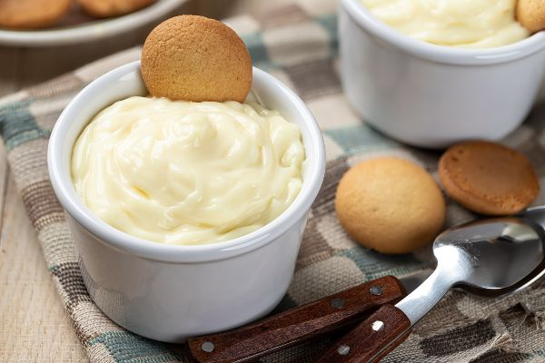

Simple Custard

This creamy custard can be enjoyed by itself, with fruit, or with some of the delicious cookies recipes
Ingredients:
- 1 egg
- 2 tablespoons sugar
- 1 cup skim milk (or reconstituted non-fat dry milk)
- 1/2 teaspoon vanilla ( optional)
Instructions:
Baked version:
- Wash hands with soap and water.
- Beat together egg and sugar in a baking dish.
- Add milk and flavorings. Mix thoroughly.
- Set baking dish in a shallow pan of hot water.
- Bake at 350 degrees until the tip of a knife inserted in the center of the custard comes out clean
(50-60 minutes). Do not overcook. Eat warm or refrigerate for later
Stovetop version:
- Wash hands with soap and water.
- Beat egg and sugar together in a saucepan.
- Add milk.
- Place saucepan with egg/milk mixture in another pan containing 1-2 inches boiling water.
- Stir custard constantly while cooking. Cook until foam disappears and custard coats the spoon.
Remove from heat.
- Add flavoring and stir. Pour into individual dishes and cool in the refrigerator. Custard will be soft.
Back